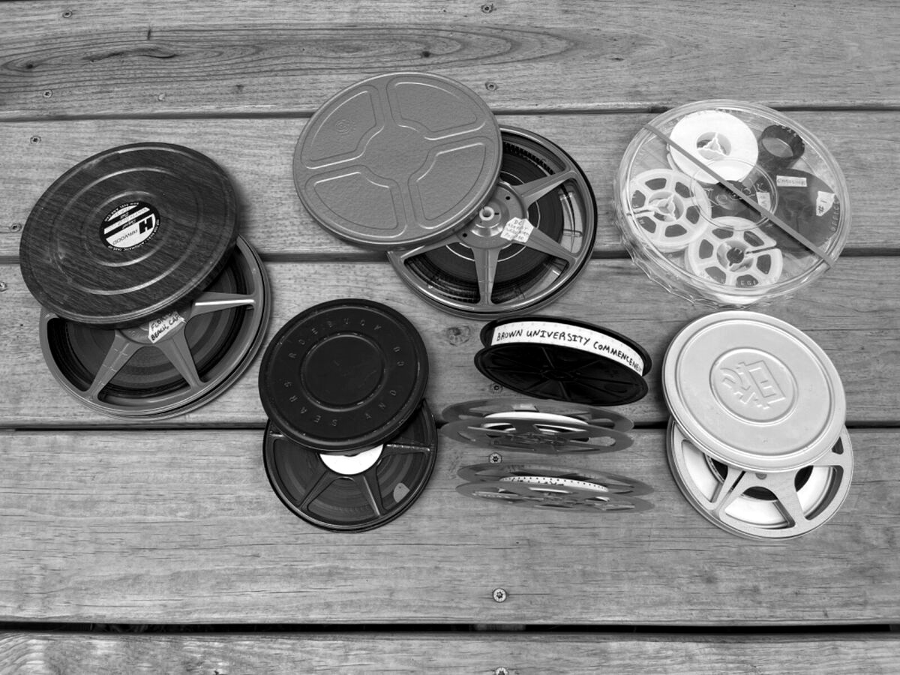
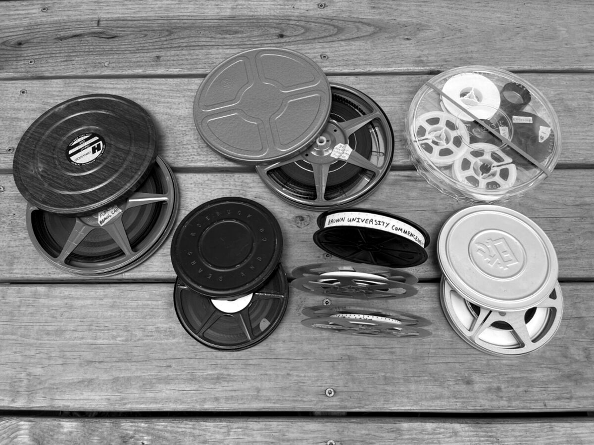

Entretenimiento
La década de los 60 fue una época muy influyente en el mundo del entretenimiento, con muchos programas de televisión, series y películas que dejaron una huella duradera. Aquí algunos de los más destacados:
Series

★ "Star Trek" (1966-1969): Aunque no fue un gran éxito en su emisión original, "Star Trek" se convirtió en un fenómeno cultural y creó una franquicia masiva que sigue siendo popular hoy en día.
★ "Batman" (1966-1968): Esta serie, protagonizada por Adam West como Batman y Burt Ward como Robin, fue un gran éxito por su estilo campy y sus coloridas representaciones de personajes de cómic.
★ "The Twilight Zone" (1959-1964): Aunque comenzó en 1959, su influencia se extendió en los años 60. Esta serie de antología creada por Rod Serling es famosa por sus giros inesperados y su comentario social.
★ "The Andy Griffith Show" (1960-1968): Este programa sobre la vida en un pequeño pueblo sureño fue muy popular y sigue siendo un clásico de la televisión estadounidense.
★ "Bewitched" (1964-1972): Una comedia sobre una bruja casada con un mortal y sus intentos de llevar una vida normal, fue muy popular en su tiempo y es recordada con cariño.
Peliculas
★ "Psycho" (1960): Dirigida por Alfred Hitchcock, esta película de terror y suspenso es icónica por su innovador uso de la narrativa y la música, así como por su famosa escena en la ducha.
★ "Lawrence of Arabia" (1962): Esta épica histórica dirigida por David Lean es conocida por su impresionante cinematografía y la actuación de Peter O'Toole.
★ "The Sound of Music" (1965): Este musical protagonizado por Julie Andrews se convirtió en un fenómeno cultural y es uno de los musicales más queridos de todos los tiempos.
★ "2001: A Space Odyssey" (1968): Dirigida por Stanley Kubrick, esta película es un hito en la ciencia ficción, conocida por sus efectos especiales innovadores y su exploración filosófica.
★ "Bonnie and Clyde" (1967): Esta película sobre los famosos criminales fue innovadora en su retrato de la violencia y su estilo narrativo, influyendo en la forma en que se hacían las películas de acción y crimen.

Metodo de visualización
★ Televisión por antena: La mayoría de las personas veían la televisión a través de señales de antena. Las señales se transmitían desde torres de transmisión y se recibían en las antenas de los televisores domésticos. Había pocos canales disponibles, y la programación era en su mayoría en blanco y negro, aunque hacia finales de la década comenzaron a aparecer más programas en color.
★ Horarios fijos: Los programas se emitían en horarios fijos, y si querías ver un programa específico, tenías que sintonizar el canal en el momento en que se transmitía. No había forma de pausar, retroceder o grabar la programación (aunque algunos hogares tenían grabadoras de audio para capturar el sonido).
★ Repeticiones: Algunas series populares tenían repeticiones, generalmente durante la temporada de verano, cuando no se producían nuevos episodios.
★ Salas de cine: Las películas se veían principalmente en las salas de cine. Los estrenos de películas eran eventos importantes, y las personas iban al cine para ver las últimas producciones de Hollywood y de otras partes del mundo.
★Reestrenos y ciclos de cine: Algunas películas populares se reestrenaban o se proyectaban en ciclos de cine, permitiendo a las personas verlas nuevamente en el cine.
★ Cines de barrio: En muchos lugares había cines locales que proyectaban películas más antiguas o menos conocidas a precios más bajos, lo que permitía a las personas ver una variedad de películas.
★ Super 8 y 16 mm: Algunas familias tenían proyectores de cine en casa y podían comprar o alquilar películas en formatos de 8 mm o 16 mm. Estas eran versiones abreviadas de películas populares o filmes educativos.
★Televisión por cable (en algunas áreas): Aunque el cable no era tan común en los 60 como en décadas posteriores, algunas áreas urbanas tenían acceso a la televisión por cable, que ofrecía una mayor variedad de canales y programación.
★ Clubs de cine y festivales: En algunas ciudades y comunidades, los clubs de cine y festivales eran formas populares de ver películas que no estaban disponibles en los cines convencionales.

 
